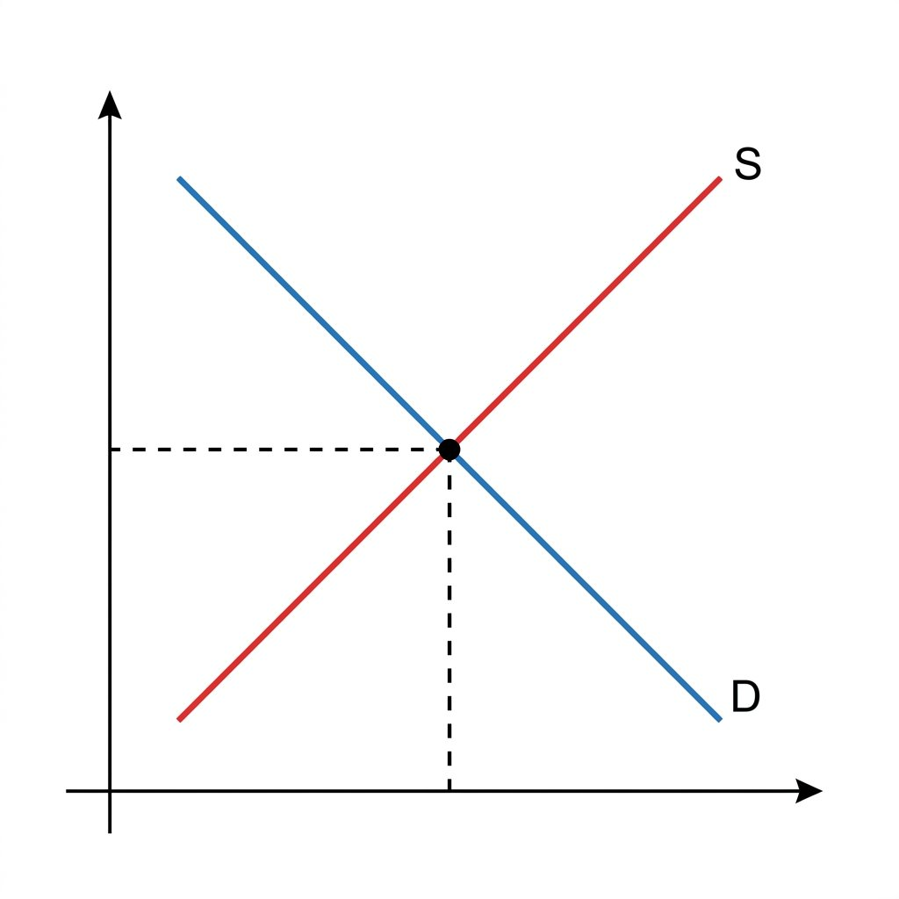

10. 市場の仕組みと価格
私たちがお店やネットで買う商品の値段は、一体誰がどのように決めているのでしょうか。現代の経済は、売り手と買い手が自由に取引をする「市場経済」が基本です。そこでは、価格が「自動的に調節される」不思議な仕組みが働いています。今回は、需要と供給のグラフの見方から、独占禁止法、そして市場経済の限界である「市場の失敗」までを分かりやすく整理します！
1. 需要（じゅよう）と供給（きょうきゅう）と価格の決まり方
売り手と買い手が商品やサービスを取引する場を市場（しじょう）と呼び、そこで決まる価格を市場価格と呼びます。
① 需要と供給のグラフ（超頻出！）
価格は、買いたい量である「需要（需要量）」と、売りたい量である「供給（供給量）」のバランスで決まります。
- 需要曲線（右下がりの青線）：価格が高ければ買いたい人は減り、価格が安ければ買いたい人は増えます。
- 供給曲線（右上がりの赤線）：価格が高ければ売り手は儲かるため作りたい量が増え、価格が安ければ儲からないため作りたい量が減ります。
- 均衡価格（きんこうかかく）：需要量と供給量がぴったり一致したときの価格（グラフの交点）。

図1：需要曲線と供給曲線。交差する部分が「均衡価格」です
② 価格の自動調節機能と「見えざる手」
価格が均衡価格より高いとき、売れ残りが発生します（供給過剰）。売り手は価格を下げます。逆に、価格が低すぎると品不足が発生します（超過需要）。買い手は高くても買おうとするため価格が上がります。
このように、市場では誰の命令もなしに、価格が自然と均衡価格へと近づく動きが働きます。イギリスの経済学者アダム・スミスは、この価格の自動調節機能を「神の見えざる手」と呼びました。
2. 競争を阻む「独占（どくせん）」と防ぐルール
価格が自由に動くには、多くの企業が公正に競争していることが大前提です。しかし、少数の大企業が市場を支配してしまうと、価格の仕組みが壊れてしまいます。
① 独占と寡占（かせん）
- 独占：1つの企業が市場を支配している状態。
- 寡占：数社の大企業が市場を支配している状態（例：スマートフォンの通信キャリアなど）。
競争がなくなると、企業が価格を話し合って高く設定する（カルテル）など、勝手に高い価格（独占価格・管理価格）が維持され、消費者が不利益を被ります。
② 独占禁止法と公正取引委員会
不公平な価格カルテルや市場の独占を防ぎ、企業間の公正な自由競争を守るために、独占禁止法（正式名：私的独占の禁止及び公正取引の確保に関する法律）が作られました。
この独占禁止法に違反する行為がないかを監視・取締りする、内閣府に属する独立性の高い行政委員会を公正取引委員会（こうせいとりひきいいんかい）と呼びます。
③ 公共料金（こうきょうりょうきん）
電気、水道、ガス、郵便、鉄道など、国民の生活に不可欠であり、市場の自由な価格設定に任せると生活が脅かされるものは、国や地方自治体が価格の決定や認可を行います。これを公共料金と呼びます。
3. 市場の失敗（しじょうのしっぱい）と政府の介入
市場経済は万能ではなく、すべてを自由な取引に任せていると、社会的に大きな問題が発生することがあります。これを「市場の失敗」と呼び、政府が介入して是正します。
◆ 市場の失敗の２大具体例
1. 公共財（こうきょうざい）の不足：
公園、道路、警察、消防、信号機などは、利用料を強制的に取ることが難しいため、民間企業が作っても利益が出ません。そのため市場に任せると不足します。➔ 政府が税金を使って供給します。
2. 公害や環境問題：
企業が利益を優先するあまり、汚染物質を川や大気に流してしまうことがあります。➔ 政府が法律や罰則を設けて規制します。
🔥 この単元のテスト対策・暗記のコツ
-
★
需要と供給の「グラフシフト」問題（超頻出！）：
・「天候不順でキャベツの収穫量が減った ➔ 供給曲線が左へシフトする（減るから） ➔ 交点（均衡価格）が上がる」というグラフの動きと価格の結びつきは、必ず作図して理解しておきましょう。 -
★
独占禁止法を監視する組織（絶対暗記）：
・法律名は「独占禁止法」、監視する組織は「公正取引委員会」です。この組み合わせは、漢字の書き取りを含めて記述でも本当によく出ます。 -
★
「公共財」と「市場の失敗」の記述対策：
・記述：「なぜ道路や公園などの公共財は、市場経済に任せず政府が税金で提供するのか、理由を説明しなさい。」
・解答：「公共財は民間企業が提供しても利益を上げることが難しく、市場経済の取引に任せるだけでは社会的に不足してしまうから。」